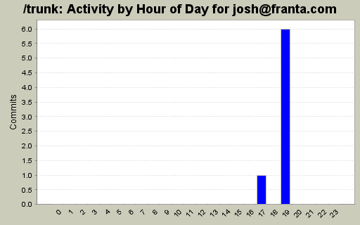
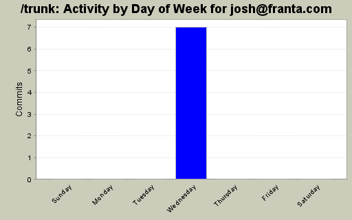
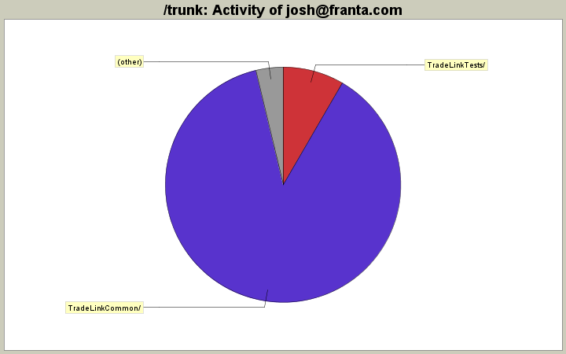

| Directory | Changes | Lines of Code | Lines per Change |
|---|---|---|---|
| Totals | 7 (100.0%) | 107 (100.0%) | 15.2 |
| TradeLinkCommon/ | 1 (14.3%) | 94 (87.9%) | 94.0 |
| TradeLinkTests/ | 3 (42.9%) | 9 (8.4%) | 3.0 |
| Kadina/ | 1 (14.3%) | 2 (1.9%) | 2.0 |
| ServerMB/ | 1 (14.3%) | 1 (0.9%) | 1.0 |
| ResponseTests/ | 1 (14.3%) | 1 (0.9%) | 1.0 |

issue #189 verified complete.
1 lines of code changed in 1 file:
issue #187 fixed
104 lines of code changed in 5 files:
issue #188 completed.
2 lines of code changed in 1 file: